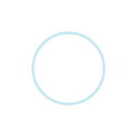

<ion-header>

    <ion-navbar [hideBackButton]="true">
        
    </ion-navbar>

</ion-header>

<ion-content padding>

    <div *ngIf="loading" text-center>
        
    </div>

    <div *ngIf="!loading">
        <h3>Choose a patient to continue:</h3>
        <ion-list>
            <div text-center *ngFor="let p of patients">
                <button style="margin-top:20px" ion-button color="light" large (click)="choosePatient(p.meetingPatientID)"
                    large>
                    Patient {{ p.patientNumber }}
                </button>
            </div>
        </ion-list>

    </div>

</ion-content>